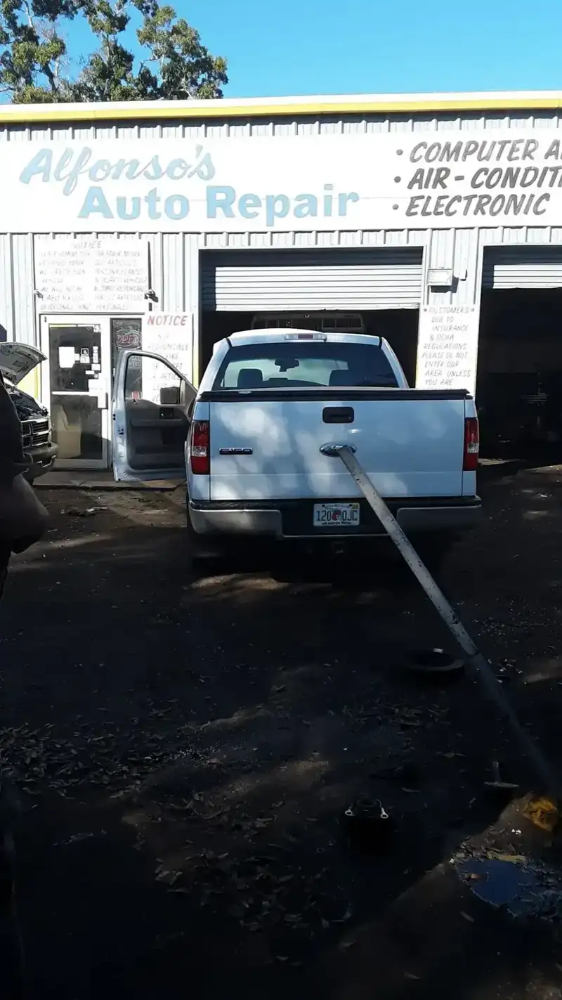

Diagnostics
Computer analysis to find what is behind a warning light or a problem.
- Computer analysis
- Electronic
Auto repair · N Armenia Ave, Tampa
Jorge and the crew give you an estimate, a timeline and honest work, and reviewers say they stay late to fit you in.

Open 7 days
What we do
The same jobs painted on the front of the building, done in the bays out back.
Computer analysis to find what is behind a warning light or a problem.
Brake and front-end work, listed on the sign out front.
A/C repair. The shop's photos include an A/C compressor.
Tune-ups and emissions work to keep the car running right.
CV axles and driveshafts, pulled and replaced in the bays.
Bring the car in and get an estimate, what needs doing and how long it takes.

Who we are
Alfonso Auto Repair sits at 2701 N Armenia Ave in Tampa, in a row of blue and white bays. The sign out front lists computer analysis, air-conditioning, brakes and emissions.
Reviewers keep coming back to the same things: a clear estimate, a clear timeline and friendly people. One driver had a repair finished in under 24 hours. Another was squeezed in after hours.
Around the shop


Postcards from customers
3.7 of 5 from 133 Google reviews
Post card✦ This place deserves way higher reviews! I’m giving 5 stars because they were so helpful and communicated everything to me, an estimate, what had to be done , how long it would take, and they finished my repair in under 24 hours stating they knew it’s important for people to have their cars! This is how a great business is run and I will take my car here in the future!
Post card✦ Very great service! Jorge was awesome! He got me in and out and was able to identify my issue right away. These are very good professional mechanics that are very knowledgeable. I recommend this shop to definitely better prices than the rest. They are always open which is a plus!
Post card✦ They are so helpful and kind and fairly priced! I have taken my car here multiple times and am happy with the services, friendliness, and willingness to help. Thank you guys so much!
Post card✦ I love these people they get the job done with no problem Jorge is very helpful and such a sweet heart
Call or stop by
2701 N Armenia Ave, Tampa, FL 33607 Directions
Open Monday to Saturday 10 to 8 and Sunday 12 to 5. Hours can change on holidays, so call ahead.